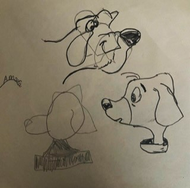
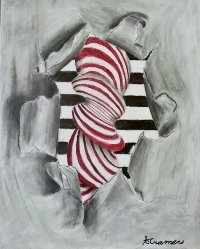

My interest in art began since the age of 9 and has stayed with my to my current age of 20 years old. This page will give you a background of my artistic development from elementary school all the way until high school.
- Elementary
- Before 4th grade in elementary school, everything I attempted to draw would end up looking like scribbles. My teachers would even call me out for the lack of effort when I really just had a lack of control with my wrist to create drawings. My uncle, Michael, a great artist who would always inspire me to work on my drawing skills. He
gave me drawing guide books so that I could learn techniques and develop muscle memory to draw better pictures. Ever since I received the book, I enhanced my skills and received compliments rather than complaints from future teachers on my art assignments. From this point forward, I fell in love with creating masterpieces. Below is an image that showcases my training at the age of 9. I was learning how to draw a cartoon dog.
- 
- Middle School
- At the beginning of 6th grade in middle school, I discovered that I would be able to take elective classes that interested me. The introduction to art classes would always catch my eye and draw me in. I preformed well in 6th grade so I was inspired to take more art classes for the rest of my middle school years.
- New art topics I learned:
- Color theory
- Shading
- Linework
- Drawing from observations
- Proportions
- High School
- More art class opportunities arised during my high school education. I had to retake an introductory art class in order to unlock the advanced classes. My high school provided both digital and traditional art classes which I participated in after completing basic introductory requirements. In my digital graphic design class, I learned how to use Adobe software to create logos, edit pictures, and draw digitally. I also took a photography class in my senior year where I learned how to manually set up a camera for specific shots. I eventually learned how I could incorporate drawing and photographing into one with light painting. In my Advanced Studio Art class based on traditional mediums, I discovered how to put my own emotion and personality into my artwork. Below is a piece I created in Advanced Studio Art. You will see more of my high school art and photography on my Art Gallery page.
- 